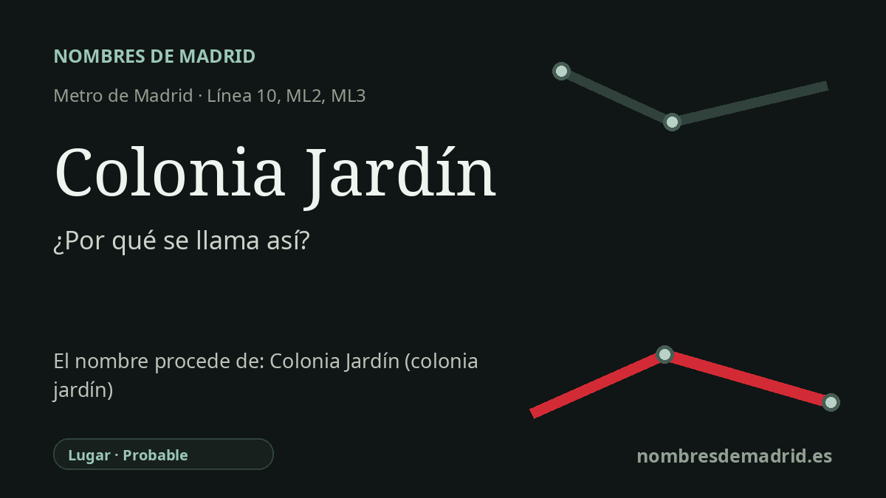

Publicado el · Investigación de Nombres de Madrid · Cómo verificamos cada origen · 10 fuentes consultadas
Respuesta rápida
Colonia Jardín recibe el nombre del conjunto residencial ajardinado situado junto a la estación, históricamente vinculado a la Colonia Militar Arroyo Meaques. El topónimo alude a un enclave de casas bajas con jardines en el borde madrileño de Campamento.
La historia del nombre
Colonia Jardín recibe el nombre del ámbito residencial situado alrededor de la estación, un enclave verde y de baja altura en el lado de Campamento de Madrid. El nombre significa literalmente colonia jardín y, en el uso local, remite a la zona de casas pequeñas con jardín junto a la carretera de Carabanchel a Aravaca y el corredor del arroyo Meaques.
El núcleo histórico mejor documentado detrás del topónimo es la Colonia Militar Arroyo Meaques. El Ayuntamiento de Madrid la describe como una colonia militar construida en los años cuarenta por el antiguo Ministerio del Ejército para alojar a oficiales y suboficiales; otros materiales de rutas locales sitúan su origen en la posguerra y destacan su tipo de casa de campo, con edificaciones auxiliares y pequeños jardines.
Esa historia explica por qué el nombre de la estación suena más suburbano que monumental. No es el nombre de una gran avenida ni una dedicatoria conmemorativa, sino una etiqueta de transporte ligada a una forma concreta de asentamiento: viviendas unifamiliares modestas, parcelas ajardinadas y calles que durante mucho tiempo conservaron aspecto de pequeño pueblo entre suelos militares, el borde de la Casa de Campo y las nuevas carreteras metropolitanas.
La estación abrió al público el 22 de octubre de 2002 como parte de la ampliación de la línea 10, primero con función de cabecera antes de la prolongación hacia MetroSur. En 2007 asumió además el papel de punto común de salida del metro ligero hacia Pozuelo y Boadilla, lo que convirtió un topónimo local en el nombre de un intercambiador importante del oeste madrileño.
Por eso conviene mantener la etimología actual, pero formularla con más precisión. La estación se llama muy probablemente así por la zona de Colonia Jardín asociada a la colonia militar de Arroyo Meaques; aun así, no consta un acuerdo oficial de denominación que lo diga de forma expresa. Las afirmaciones sobre una inspiración directa en el movimiento de ciudad-jardín de Ebenezer Howard deben tratarse como contexto urbanístico, no como hecho demostrado para esta colonia concreta, salvo que se consulte una fuente arquitectónica o de planeamiento más específica.